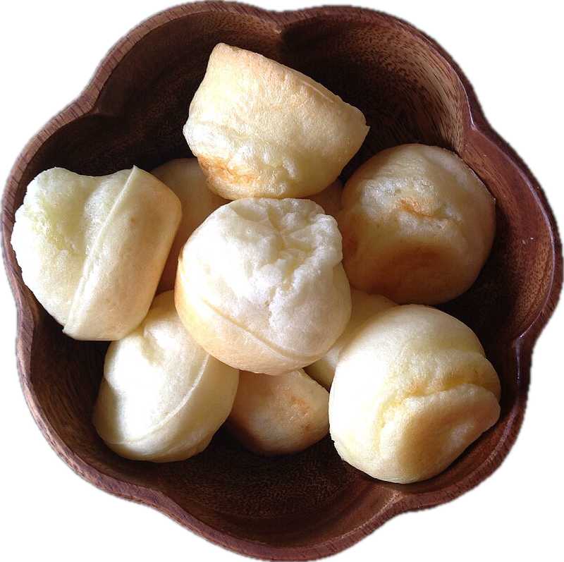

Pão de queijo

Photo by Joy
source
Description
Pão de queijo is a popular Brazilian cheese bread made with tapioca flour,
giving it a soft, chewy texture and a delicious cheesy flavor.
Ingredients
- 1 large egg, at room temperature
-
80 ml extra virgin olive oil, plus a little extra for greasing the pan
- 160 ml milk
- 170 g tapioca flour
- 66 g grated or crumbled cheese of your choice
- 1 teaspoon (ca 5 ml) salt, or more to taste
Steps
-
Preheat the oven to 200°C. Lightly grease the cups of a non-stick mini
muffin tin with olive oil.
-
Add the egg, olive oil, milk, tapioca flour, cheese, and salt to a
blender. Blend until the batter is smooth, scraping down the sides if
needed.
-
If you like, you can cover the batter and keep it in the fridge for up
to 1 week. Let it come back to room temperature and whisk it before
baking.
-
Pour the batter into the prepared mini muffin tin, filling each cup
almost to the top, leaving about 3 mm of space.
-
Bake for 15–20 minutes, or until the breads are puffed and nicely golden
brown. Let them cool on a rack for a few minutes.
-
Serve warm or at room temperature. Store leftovers in an airtight
container (1 day at room temp, up to 1 week in the fridge, or up to 1
month in the freezer) and reheat briefly before eating.
Home